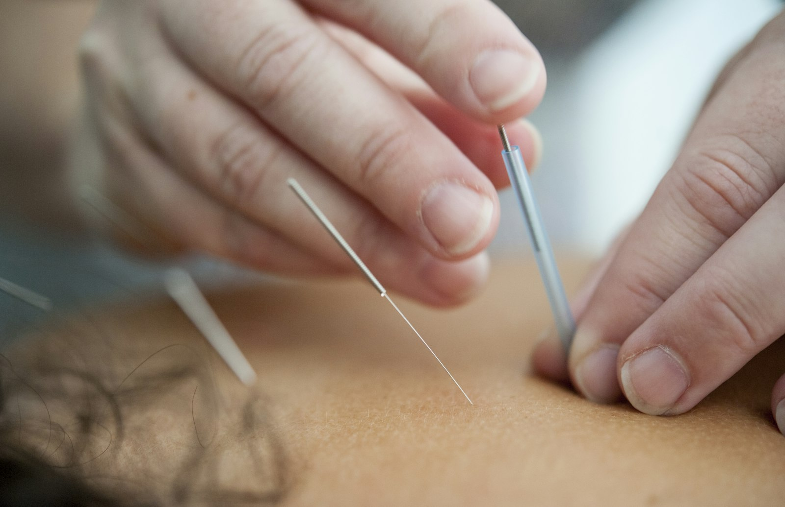

Técnicas milenares que buscam o equilíbrio do corpo como um todo, aliviando dores, tensões e a ansiedade que muitas vezes acompanha a dor física.
A Acupuntura usa agulhas finíssimas, quase imperceptíveis, inseridas em pontos específicos do corpo para estimular o equilíbrio energético e aliviar dores. A Auriculoterapia trabalha os mesmos princípios, mas concentrados em pontos da orelha, ligados a diferentes órgãos e funções do corpo.
Rosana usa as duas técnicas há décadas, sempre integradas ao restante do cuidado: muitas vezes complementam uma sessão de massagem oncológica, de Silêncio Neural ou de liberação miofascial, potencializando o alívio.

Antes de tudo, uma conversa: Rosana entende o histórico e o que você sente para escolher os pontos certos. A inserção das agulhas costuma ser indolor, e a sensação predominante é de relaxamento profundo durante os minutos em que elas ficam posicionadas.
Mais de três mil anos de prática na Medicina Tradicional Chinesa, com Rosana aplicando há décadas.
Agulhas estéreis e descartáveis, extremamente finas. A maioria sente apenas relaxamento.
Combina com massagem oncológica, Silêncio Neural e liberação miofascial no mesmo cuidado.
"O corpo fala através da dor. A acupuntura ajuda a escutar e devolver o equilíbrio que ele pede."